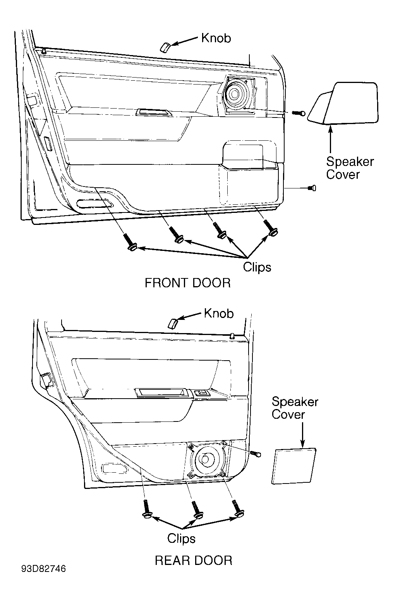
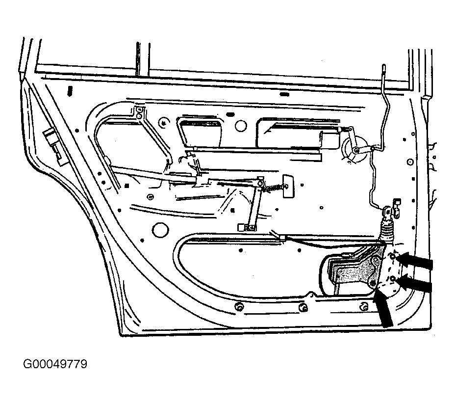
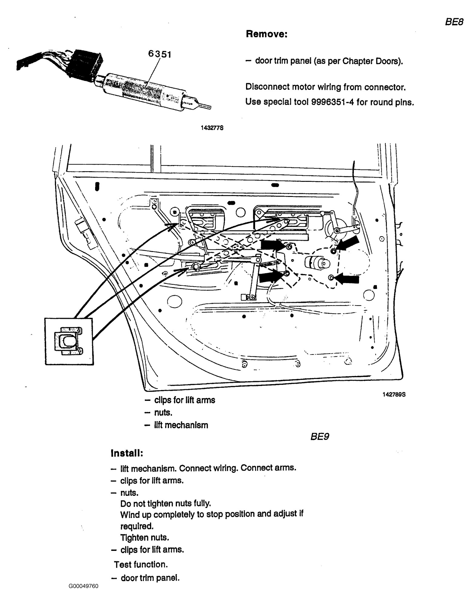

Neither Volvo's VIDA nor the LEMON 1994 940 books contain the step that takes the roll-up glass out of the rear door or puts it back in. Every VIDA door-glass document that matches a 940 search is written for a later car (C70 or newer) and is left out here. The glass steps below come from the Volvo Club UK FAQ for the 700/900 series and carry a VOC FAQ tag. Volvo's own glass procedure is in its body manual TP 31298/1, which neither source includes.
Wear gloves and safety glasses while clearing the broken glass. VOC FAQ The new glass is tempered and can shatter if an edge is struck. VOC FAQ
Tap a step to check it off. Progress is saved in this browser only.
Order by VIN. Neither source gives a part number for the glass itself.
From the 1994 940 book (window motor removal, rear doors).
Remove the door trim panel. The 940 figure shows what holds it: the lock knob at the top, the speaker cover and the screw beside the speaker, and three press clips along the bottom edge.

Remove the plastic condensation trap (the sheet behind the panel): bend up its retaining clip. Keep it whole; it goes back on.

Volvo Club UK FAQ.
Vacuum the glass out of the heater ducts and the carpet. VOC FAQ
Vacuum inside the door through the openings in the inner panel, all the way down to the bottom. Glass left in the door works its way into the lock mechanism. VOC FAQ
Pull what is left of the old glass out of the lift channel, and any loose pieces from the window guides in the door frame. not from a manual
The glass sits in a metal lift channel. The regulator's lift arms clip to that channel.
Find the clips for the lift arms: the arms end in sliders that ride in the lift channel, and a clip holds each one. The figure is from the 700-series rear-door procedure; compare it with the 940 drawing above before trusting the details. LEMON 700 book

Release the two clips that mount the window to the lift track, and take the channel out. VOC FAQ
If the new glass came with its own channel, skip to New glass.
Moving the old channel to the new glass: pull out the old filler strip and clean the channel. Cut new filler strip 1268231 to the channel's length and lay it in. The glass compresses the strip when it is pushed into the channel. VOC FAQ
The channel has to go back at the same place along the glass's bottom edge, and neither source gives that position. On an intact glass the FAQ says to mark it before removal. Here, ask the glass supplier, or compare against the right rear door's glass. not from a manual
Press the glass into the channel. A glass-shop method from the FAQ: adhesive in the channel, then press the glass in. Let the adhesive cure fully before the window is run. VOC FAQ
Volvo Club UK FAQ, "Replacing Window Glass in Track", in reverse.
Put the glass in with the rear edge tilted up and the front edge down, so it clears the tracks, then level it into both side tracks. VOC FAQ
Fit the window into the lift while the lift sits on its plastic guides; the FAQ calls this the easiest way to reinstall it. VOC FAQ
Install the clips for the lift arms. LEMON 700 book
Test function: run the window all the way down and up. LEMON 700 book
The FAQ blames dried-out or broken plastic guide blocks in the channel, and, on a 740 driver's door, the red plastic washer between the clip and the slider (p/n 1334889-1). VOC FAQ
700-series rear door window lift mechanism, LEMON 740 book. Skip if the window ran normally before the glass broke.
Disconnect the motor wiring at the connector. Volvo special tool 9996351-4 releases the round pins. LEMON 700 book
Remove the clips for the lift arms, the nuts (block arrows in the figure above), and the lift mechanism. LEMON 700 book
Some doors hold the regulator with rivets instead of nuts: drill them out with a 5/32″ bit; the FAQ fits 6 mm × 1.0 bolts in their place. The assembly comes out through the lower opening in the door. VOC FAQ
Install the lift mechanism, connect the wiring, connect the arms, fit the clips. Fit the nuts but don't tighten them fully. LEMON 700 book
Wind the window up to the stop, adjust the mechanism if needed, then tighten the nuts. Test function. LEMON 700 book
Refit the condensation trap and bend its retaining clip back down.
Refit the door trim panel: press clips, screw, speaker cover, knob.
Run the window through its full travel once more with the panel on.
| Item | Value |
|---|---|
| Lift channel filler strip VOC FAQ | 1268231 |
| Rear door guide moulding, to MY 1994 VIDA bulletin 83007 | 3518556-0 |
| Rear door guide moulding, left, 1995 on VIDA bulletin 83007 | 6846392-6 |
| Rear door guide moulding, right, 1995 on VIDA bulletin 83007 | 9152002-3 |
| Connector pin tool LEMON 700 book | 9996351-4 |
| Window regulator R&R, electric, each 940 labor time | 0.9 h |
| Regulator nut torque | not given |
Sources: LEMON manual for the 1994 Volvo 940 Base 4D Sedan (AW71): Body & Frame, Power Windows, Power Window Motor removal (Fig 1 Removing Door Panel); Central Locking System, Window Motor (Right Front & Both Rear Doors) remove and notes (Fig 2 Rear Door); Labor Times, Window Regulator. LEMON manual for the 1987 Volvo 740 GLE 4D Sedan: Body & Frame, Power Windows, Window Lift Mechanism, Rear Doors. Volvo VIDA service bulletin 83007, 700/900 Series Window Guide Mouldings 6848266-0 and 3518556-0 (06/95). Volvo Club UK FAQ, Body Glass, Mirrors, Moldings, Water Leaks on the Volvo 700, 900 and 90 Series: Replacing Window Glass in Track; Replacing the Window Lift Channel Rubber Filler Strip; Power Window Noise; Power Window Motor Removal; Replacement Windshield (glass cleanup).